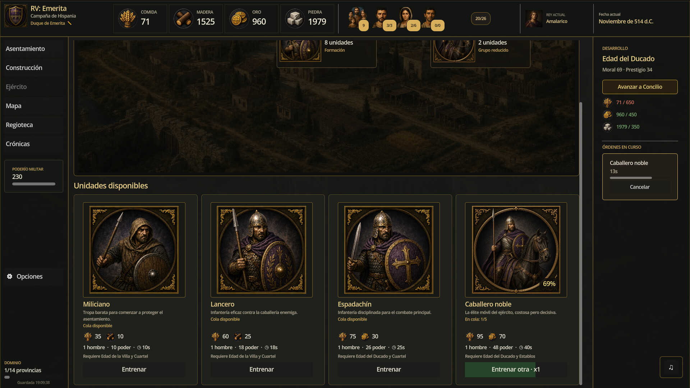
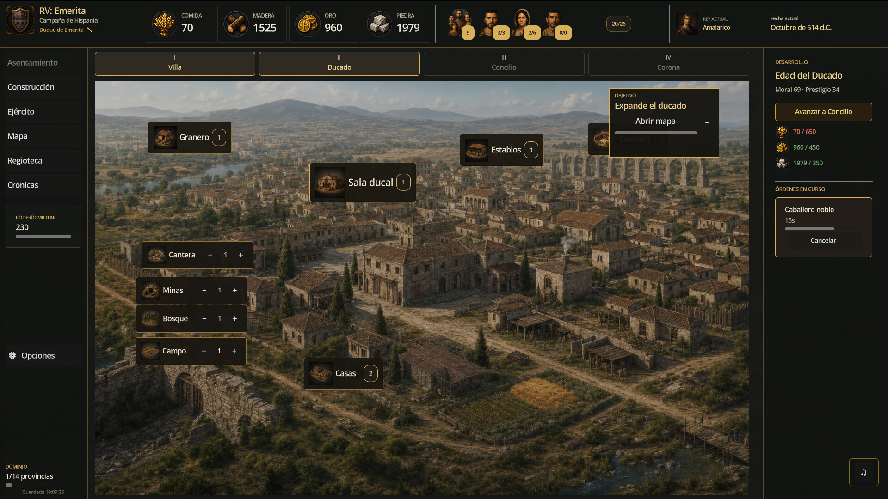

Tráiler oficial
Así se mueve Reino Visigodo
Mi proyecto más nuevo
De un aula de Llerena a un juego de estrategia
En 2021 publiqué Nuestra Historia: Una historia de visigodos, escrito junto a mis alumnos. Aquella curiosidad por el reino visigodo y su final ante la invasión musulmana no se quedó en el libro: ahora la estoy llevando a un videojuego completo de estrategia histórica, bajo el sello MMF Games. Unifica los reinos peninsulares, gestiona tus provincias y decide el destino de Hispania en batallas por turnos.
- 🏰 Gestión de reino: economía, provincias y ciudades para sostener la conquista.
- ⚔️ Batallas tácticas por turnos con distintos tipos de unidades históricas.
- 🗺️ Conquista de la península ibérica inspirada en hechos y gobernantes reales.
- 🎻 Banda sonora orquestal original compuesta para el juego.
- 🎨 Ilustraciones propias con una atmósfera visigoda cuidada al detalle.
Capturas
Primeras imágenes del juego


Disponible próximamente
El juego todavía está en desarrollo. La mejor forma de no perderte el lanzamiento es visitar la ficha en Steam y añadirlo a tu lista de deseados: cada seguidor ayuda a que el proyecto llegue a más gente.